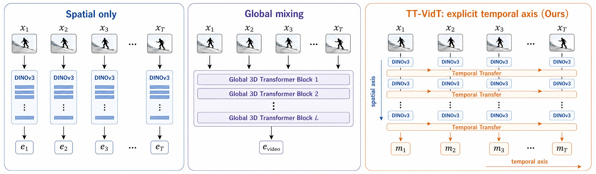
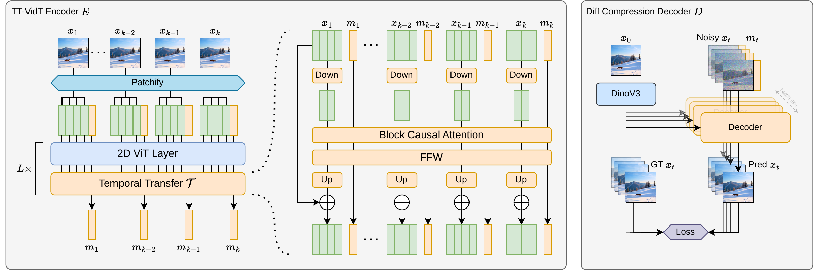
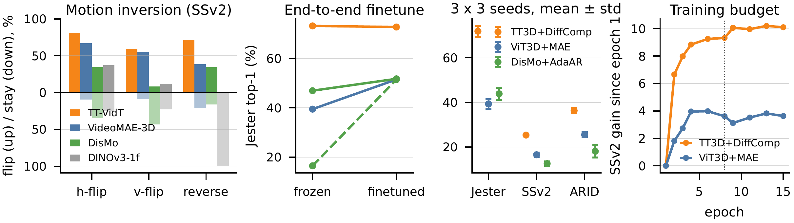

TL;DR. Under a matched recipe of 24 architecture-objective combinations, only the pairing of a compact Temporal Transfer path with Diff Compression learns a representation that reads motion rather than appearance. TT-VidT leads Jester, Something-Something V2, ARID and Diving48 at the same time, at about half the encoder FLOPs of VideoMAE, V-JEPA 2 and DisMo.
Abstract
Comparisons in video self-supervised learning often evaluate complete training recipes rather than isolating the method itself: architecture, objective, data exposure, schedule, scale, and decoder capacity can all vary at once. This makes it hard to identify which choices yield motion-prioritized representations, whose gains concentrate on frame-to-frame change while retaining useful appearance. We address this with a matched 4×6 = 24 architecture-objective study at roughly 170M∼190M encoder scale on ~1.7M OpenVid and Moments-in-Time v2 clips for 8 epochs, and propose TT-VidT. TT-VidT combines a DINOv3-initialized ViT-B/16 per-frame spatial path with a compact Temporal Transfer Layer, trained by Diff Compression to reconstruct target frames from a first-frame appearance anchor and frame-specific motion tokens. The sweep shows that TT3D with Diff Compression, not either component alone, enters the strongest motion-sensitive regime, and decoder ablations favor a compact video-pretrained decoder. In final comparison, TT-VidT leads Jester, Something-Something V2, ARID, and Diving48 fine-tuning simultaneously, improving over the strongest non-TT row by 54%∼121%, while using 48% fewer encoder FLOPs than DisMo and 55% fewer than VideoMAE or V-JEPA 2. HMDB51, IARD, and EPIC-Kitchens bound the claim.
Method
The encoder interleaves DINOv3 ViT-B/16 layers, applied to each frame independently, with a Temporal Transfer layer. Eight learnable motion tokens join each frame's spatial tokens in the ViT self-attention, and the Temporal Transfer layer then lets the motion tokens, together with a 4×-downsampled view of the spatial tokens, attend across frames under a block-causal mask. The cross-frame sequence has 192 tokens instead of 2,048.
Diff Compression trains the encoder: a small diffusion decoder reconstructs every later frame from the first frame's full spatial features and that frame's motion tokens alone. Appearance is always available from the wide anchor, so the only useful content of a motion token is what the anchor cannot supply, which is how the frame has changed.

Results
Setup. Every model in this study is trained from the same matched recipe, a deliberately small one: about 1.7M OpenVid and Moments-in-Time v2 clips, 8 epochs (about 13.6M samples seen), and encoders of roughly 170M∼190M parameters. This budget matches DisMo's published setting. It is far below the native recipes of VideoMAE or V-JEPA 2, so absolute numbers are lower than their reported ones, but every difference below comes from the architecture and objective rather than from data or compute. We evaluate frozen features with an attentive probe unless a table says finetuning.
The only design to lead every motion-heavy benchmark
All methods share one pretraining recipe: the same data, schedule and encoder scale. Frozen attentive probing on six datasets, plus Diving48 full finetuning and EPIC-Kitchens verb anticipation.
| Method | HMDB | ARID | IARD | Jester | SSv2 | EK-V | D48 FT | EK-V Antic. |
|---|---|---|---|---|---|---|---|---|
| V-JEPA 2 | 22.70 | 16.01 | 79.34 | 27.41 | 10.59 | 32.61 | 8.02 | 23.07 |
| VideoMAE | 27.73 | 24.37 | 80.44 | 39.47 | 14.95 | 35.62 | 8.43 | 22.81 |
| DisMo (dual aug.) | 22.57 | 22.45 | 89.89 | 46.95 | 13.33 | 31.97 | 8.12 | 22.72 |
| TT-VidT (ours) | 25.15 | 37.47 | 74.84 | 73.25 | 25.92 | 32.54 | 18.63 | 21.33 |
HMDB51, IARD and EPIC-Kitchens reward appearance, scene context or anticipation, and bound the claim: TT-VidT targets motion-sensitive recognition.
The representation reads motion, not appearance
Something-Something V2 contains class pairs that are exact mirrors under a horizontal flip, a vertical flip, or time reversal. We invert the motion of correctly classified clips and ask whether a frozen probe follows. A flip to the mirror class means the encoder re-read the motion, and a stay means appearance decided. TT-VidT follows the inverted motion on nearly every clip, while every baseline keeps part of its answers, most of all under time reversal, where no pixel changes.
| Model | H-flip (flip / stay) | V-flip | Time reversal | Shuffle drop |
|---|---|---|---|---|
| TT-VidT (ours) | 81.2 / 0.6 | 59.5 / 0.9 | 71.4 / 1.0 | 50.9% |
| VideoMAE | 66.9 / 9.7 | 55.1 / 9.1 | 38.6 / 20.9 | 50.0% |
| DisMo | 34.5 / 35.0 | 8.4 / 43.2 | 34.5 / 16.4 | 31.9% |
| DINOv3, single frame | 37.1 / 24.5 | 11.8 / 22.7 | 0.0 / 100.0 | 3.1% |
The gain belongs to the method

End-to-end finetuning saturates the baselines near 51.5 on Jester, well below TT-VidT's frozen probe. A ViT3D initialized from DINOv3 moves only appearance-heavy IARD, so the image substrate does not create the motion regime. A VTok-style explicit feature difference is weaker than the learned motion token on all five datasets. The ordering holds across seeds and at a near-doubled training budget.
BibTeX
@inproceedings{
yeh2026ttvidt,
title={{TTV}idT: Decoupling the Temporal Axis for Efficient Motion-Centric Video Pretraining},
author={Shih-Ying Yeh and Daniel Z Kaplan and Xuehai Wang and Fu-En Yang and Min-Hung Chen and Shang-Hong Lai},
booktitle={The Fortieth Annual Conference on Neural Information Processing Systems},
year={2026},
url={https://openreview.net/forum?id=ELiMecKQps}
}